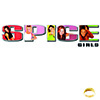
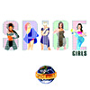
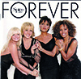
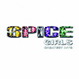

Die Spice Girls sind eine britische Girlgroup, die 1994 in London gegründet wurde. Sie gelten als eine der erfolgreichsten Popgruppen der 1990er-Jahre. Ihren internationalen Durchbruch hatten sie 1996 mit der Single „Wannabe“.
| Cover | Titel | Erscheinungsjahr |
|---|---|---|
|  | Spice | 1996 |
|  | Spiceworld | 1997 |
|  | Forever | 2000 |
|  | Greatest Hits | 2007 |